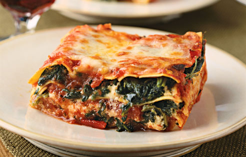

Vegetarian Lasagna Recipe

Description
This is the perfect recipe for italian cuisine lovers who are also vegetarians. Fresh spinach and plenty of recotta, romano and mozzarella make this a cheesy and hearty dish. This is a versatile recipe that can also be made without the spinach
Ingredients
- 20 lasagna noodles
- 2 tablespoons olive oil
- 1 cup chopped fresh mushroom
- 1 cup chopped onion
- 1 tablespoon minced garlic
- 2 cups fresh spinach
- 3 cups ricotta cheese
- 2/3 cup grated romano cheese
- 1 teaspoon salt
- 1 teaspoon dried oregano
- 1 teaspoon dried basil leaves
- 1/2 teaspoon ground black pepper
- 1 egg
- 3 cups shredded mozzarella cheese
- 3 cups tomato pasta sauce
- 1 cup grated Parmesan cheese
Steps
- Preheat oven to 350 degrees F (175 degrees C).
- Bring a large pot of lightly salted water to a boil. Add lasagna noodles and cook for 8 to 10 minutes or until al dente; drain.
- In a skillet over medium-high heat, cook mushrooms, onions, and garlic in olive oil until onions are tender. Drain excess liquid and cool. Boil spinach for 5 minutes. Drain, then squeeze out excess liquid. Chop spinach.
- Combine ricotta cheese, Romano cheese, spinach, salt, oregano, basil, pepper, and egg in a bowl. Add cooled mushroom mixture. Beat with an electric mixer on low speed for 1 minute. Lay 5 lasagna noodles in bottom of a 9x13 inch baking dish. Spread one third of the cheese/spinach mixture over noodles. Sprinkle 1 cup mozzarella cheese and 1/3 cup Parmesan cheese on top. Spread 1 cup pasta sauce over cheese. Repeat layering 2 times.
- Cover dish with aluminum foil and bake in a preheated oven for 1 hour. Cool 15 minutes before serving.